اطلاعاتی که کاربران در فرمها وارد میکنند، چطور در پایگاه داده ذخیره میشود؟
برنامهنویس چگونه میتواند از بروز خطاها در سایت جلوگیری کند؟
در پایان از هنرجو انتظار میرود
بتواند با استفاده از جنگو در پایگاه داده تغییرات اعمال کند.
مفهوم فیلد و جدول در جنگو را درک کرده و درباره آن استدلال نماید.
با استفاده از جنگو، بتواند اطلاعات فرمها را در پایگاه داده ذخیره نمایند.
با مفهوم ORM در جنگو آشنا شود و بتواند پرسوجوهای ساده بنویسد.
مشکلات و باگهای مرسوم در وب اپلیکیشنها را بشناسد و بتواند بهصورت عملی مشکلات را برطرف نماید.
استاندارد عملکرد
هنرجو بتواند با ساخت Model در جنگو و استفاده از فرمهای HTML ارتباط با پایگاه داده را پیادهسازی کند و اطلاعاتی که کاربران وارد میکنند را در جداول ذخیره و بازیابی نماید.
صفحه ۲۹۶
ساخت جدول شهر در پایگاه داده
تا این مرحله سایت شما فقط دمای شهرهایی را نمایش میدهد که در view مشخص کردهاید، یعنی در show_temp_view اسم شهر ثابت است و همیشه دمای یک شهر، نمایش داده خواهد شد. روش بهتر این است که کاربر مهمان، قابلیت انتخاب شهر موردنظرش را داشته باشد.
جهت پیادهسازی این قابلیت، نیاز است، اطلاعات شهرها را به همراه طول و عرض جغرافیایی هر شهر، در پایگاه داده ذخیره کنید، سپس وقتی کاربر وارد سایت شد، لیستی از شهرها را مشاهده کرده و با کلیک روی نام شهر، دمای شهر موردنظر خود را ببیند.
برای پیادهسازی این قابلیت باید یک جدول (table) در پایگاهداده ایجاد کنید.
هر app یک فایل با نام models.py دارد. جنگو برای ساخت جداول از مدلها (model) استفاده میکند. هر مدل در جنگو معادل یک جدول، با همان نام، در پایگاهداده است. در اولین قدم باید درون فایل models.py کلاس لازم برای تعریف جدول و ستونهای جدول ایجاد شود.
فایل models.py در weather app را باز کنید. سپس محتوای این فایل را همانند شکل 27 تغییر دهید.
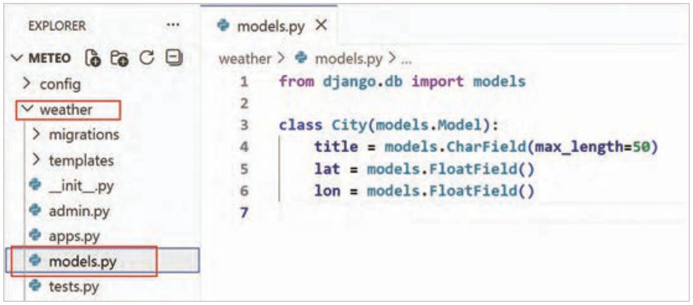
شکل ۲۷: ساخت مدل City
توضیحات کدها:
خط 1: ماژول models از ماژول django.db، وارد (import) شده است. در واقع با این خط، ابزارها و کلاسهای لازم برای تعریف مدلهای پایگاهداده (Database Models) وارد (import) میشوند.
خط 3: کلاس City جهت ساخت جدول شهرها با ارثبری از Model ایجاد شده است. Model کلاس پایه جنگو برای ساخت مدلها (جدولهای پایگاهداده) است و امکانات لازم برای ارتباط با پایگاهداده را فراهم میکند.
خط 4: این دستور یک فیلد برای نگهداری نام شهر بهصورت متن، در جدول میسازد که حداکثر 50 کاراکتر طول دارد. برای CharField تعیینکردن max_length اجباری است.
خط 5: از FloatField جهت نگهداری اعداد اعشاری استفاده شده است. عرض جغرافیایی (Latitude) و طول جغرافیایی (Longitude) هر دو عدد اعشاری هستند.
صفحه ۲۹۷
برای استفاده از مدل City، نیاز است که جدول معادلش در پایگاهداده ساخته شود.
در ترمینال دستور makemigrations را همانند شکل 28 اجرا کنید.
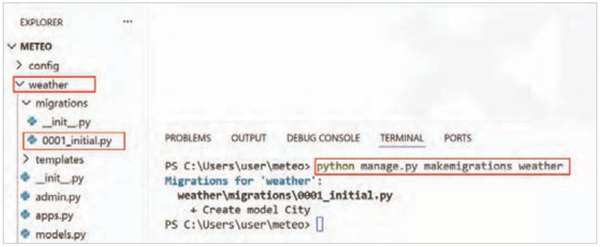
شکل ۲۸: اجرای دستور makemigrations
وقتی makemigrations را اجرا میکنید، درون weather app، فایلی با نام 0001_initial.py در پوشه migrations ایجاد میشود. این فایل کدهای لازم جهت تبدیل مدل به جدول واقعی را آمادهسازی میکند. در مرحله بعد دستور migrate را همانند شکل 29 در ترمینال اجرا کنید.
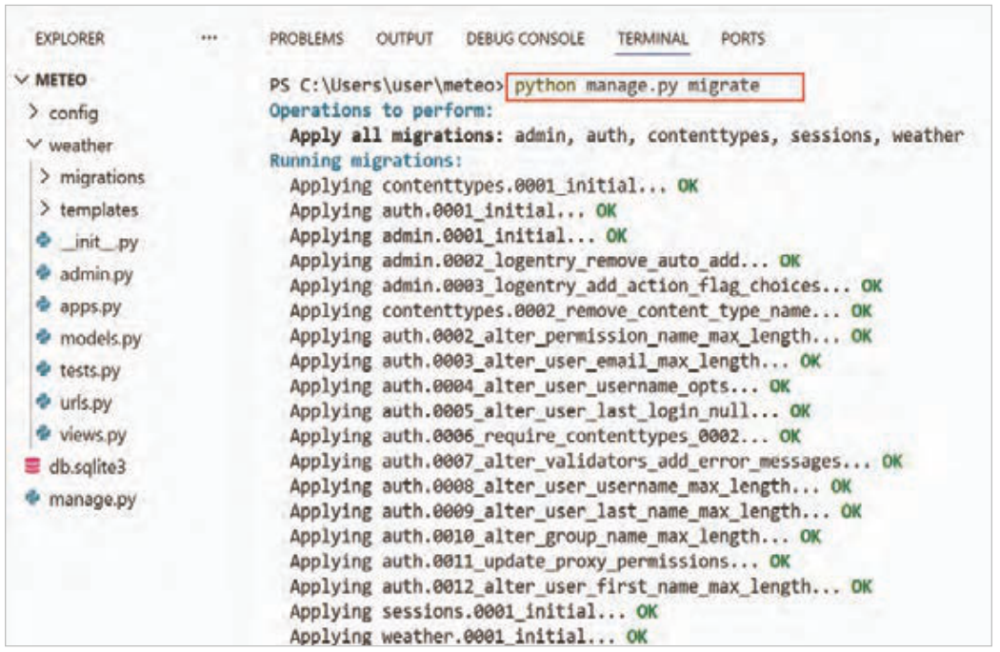
شکل ۲۹: اجرای دستور migrate
صفحه ۲۹۸
پس از اجرای migrate، جدولهای پیشفرض جنگو و جدول city در پایگاهداده db.sqlite3 ساخته میشوند.
مشاهده جداول پایگاهداده
برای مشاهده ساختار و محتوای جداول درون پایگاهداده، میتوانید افزونه SQLite Viewer را بهعنوان یک ابزار کمکی نصب کنید. برای نصب این افزونه مطمئن شوید که اینترنت متصل باشد (شکل 30).
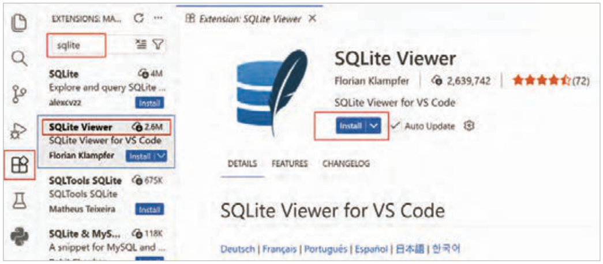
شکل ۳۰: جستوجوی افزونه SQLite Viewer
پس از نصب افزونه ذکر شده، با کلیک بر روی فایل db.sqlite3 جدولهای پیشفرض جنگو و جدول city را مشاهده خواهید کرد (شکل 31).
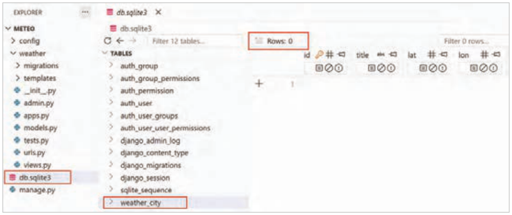
شکل ۳۱: جداول پایگاهداده
صفحه ۲۹۹
همانطورکه درشکل 31 مشخص است، جدول city با پیشوند weather ساخته شده است. با کلیک روی جدول weather_city، لیست فیلدها در سمت راست نمایش داده میشود. در حال حاضر هیچ رکوردی در جدول city وجود ندارد.
با افزونه SQLite Viewer فقط میتوانید محتوا و ساختار جداول را مشاهده کنید و امکان ذخیره اطلاعات وجود ندارد.
برای تغییر محتوای جدول city و یا افزودن نام شهرهایی جدید به جدول لازم است وارد پنل ادمین جنگو شوید. البته هنوز نمیتوانید از طریق پنل admin دادههای مربوط به شهرها را وارد دیتابیس کنید، چرا که هنوز کاربر admin تعریف نشده است؛ بنابراین در مرحله بعد نوبت تعریف کاربر admin است.
پنل مدیریت جنگو
برای ورود به پنل ادمین، نیاز به نام کاربری و رمز عبور است. دستور زیر را در ترمینال وارد کنید:
python manage.py createsuperuser جنگو از شما نام کاربری درخواست میکند (شکل 32).
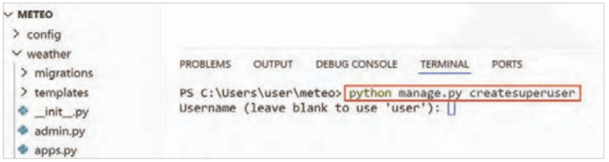
شکل ۳۲: اجرای دستور createsuperuser
همانگونه که مشخص است، نام کاربر جاری ویندوز را بهعنوان نام کاربری پیشنهاد داده است.
میتوانید نام کاربری admin و یا هر نام کاربری دیگری را بهدلخواه وارد کنید، سپس بهترتیب، ایمیل، کلمه عبور و تکرار کلمه عبور را وارد کنید (شکل 33).
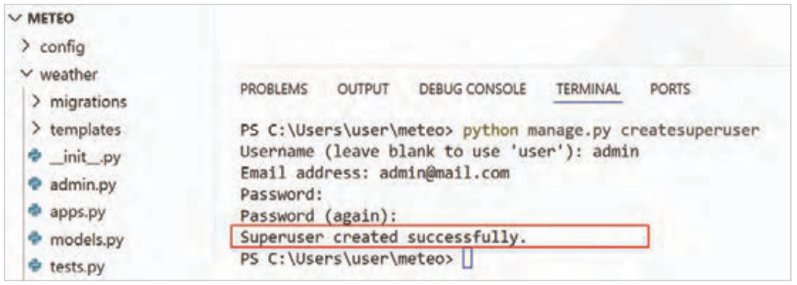
شکل ۳۳: ایجاد موفق کاربر ادمین
صفحه ۳۰۰
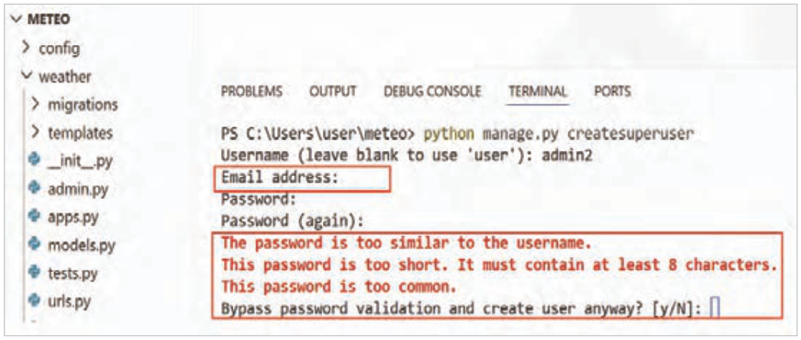
شکل ۳۴: اخطار سادهبودن رمز ادمین
پس از ایجاد کاربر ادمین، با افزونه SQLite Viewer میتوانید، کاربر ایجاد شده را در جدول auth_user همانند شکل 35 مشاهده کنید.
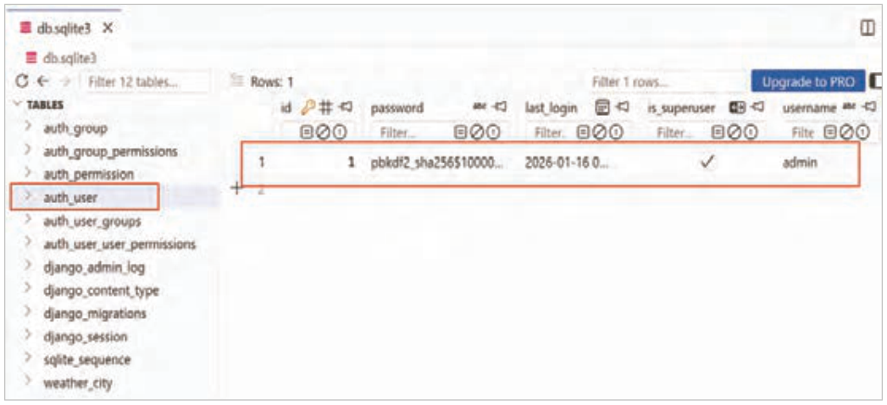
شکل ۳۵: نمایش کاربر admin ایجاد شده در دیتابیس
صفحه ۳۰۱
اکنون جهت ورود به پنل مدیریت ادمین جنگو، سرور جنگو را روشن کرده و صفحه ادمین را با تایپ آدرس زیر در نوار آدرس مرورگر، باز کنید:
http://127.0.0.1:8000/admin/ سپس با نام کاربری و رمز عبوری که ساختهاید، وارد شوید.
پنل ادمین همانند شکل 36 نمایش داده خواهد شد.
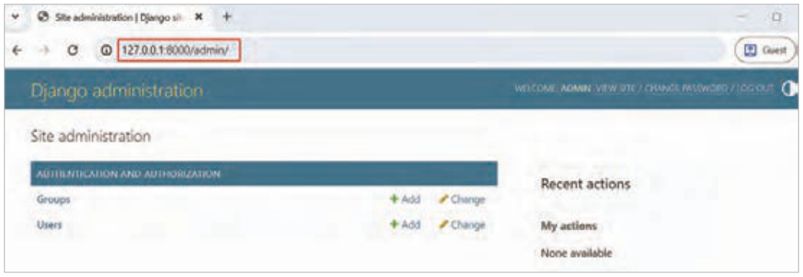
شکل ۳۶: ورود موفق به پنل ادمین جنگو
در قسمت Authentication and Authorization¹ با استفاده از Users میتوان کاربران سایت را مشاهده و مدیریت کرد.
با استفاده از دکمه add میتوان کاربر جدید ایجاد کرد. برای ایجاد کاربر جدید، لازم است فیلدهای نام کاربری، رمز عبور و تکرار رمز عبور را وارد کرده و دکمه save را بزنید (شکل 37).
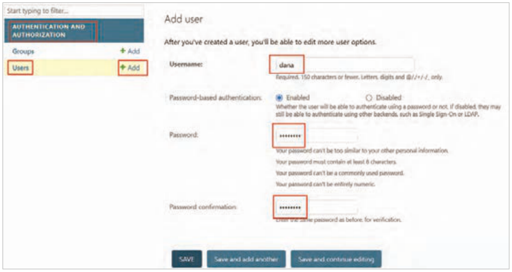
شکل ۳۷: فرم ساخت کاربر جدید
صفحه ۳۰۲
پیغام ذخیره موفقیتآمیز همانند شکل 38 مشاهده خواهید کرد. در این مرحله میتوانید اطلاعات تکمیلی، مثل نام، نام خانوادگی، ایمیل و… را برای کاربر ایجاد شده ثبت کنید.
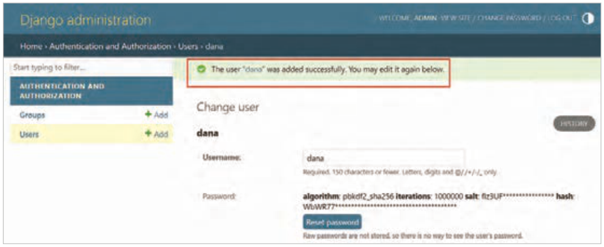
شکل ۳۸: ذخیره موفق کاربر
برای مشاهده لیست کاربران ایجاد شده، روی Users کلیک کنید (شکل 39).
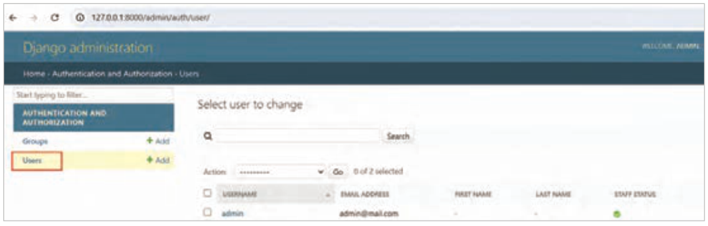
شکل ۳۹: مشاهده لیست کاربران
افزودن جدول شهر به پنل ادمین
اگر دقت کرده باشد در شکل 36، در پنل ادمین جدول شهرها مشاهده نشد، با انجام مراحلی که در ادامه آمده است، میتوانید جدول City را به پنل ادمین اضافه کنید.
صفحه ۳۰۳
هر app در جنگو یک فایل admin.py دارد. فایل admin.py در weather app را باز کنید و همانند شکل 40، مدل City را به ادمین جنگو معرفی کنید.
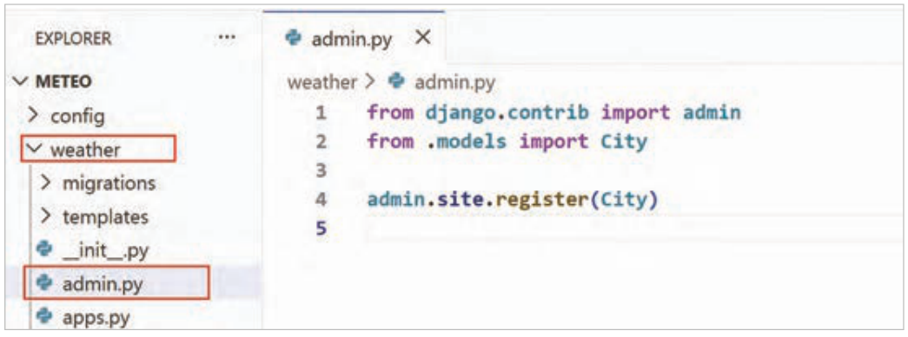
شکل ۴۰: معرفی مدل City به پنل ادمین جنگو
توضیحات کدها:
خط 1: ماژول admin جهت مدیریت پنل ادمین از contrib وارد (import) شده است.
خط 2: مدل City از فایل models.py وارد (import) شده است.
خط 4: مدل City با دستور register به پنل ادمین معرفی شده است.
اکنون فایل را ذخیره کنید، سپس مرورگر را refresh کنید، جدول city به ادمین جنگو اضافه شده است و حرف s به انتهای نام مدل اضافه شده است (شکل 41).
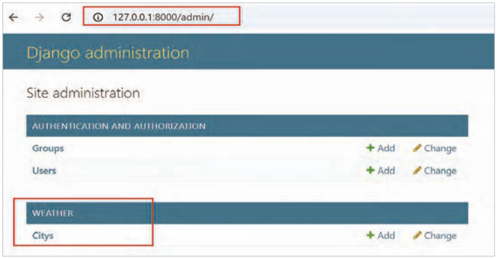
شکل ۴۱: اضافه شدن City به پنل ادمین
صفحه ۳۰۴
وارد کردن اطلاعات شهرها
در پنل ادمین، روی دکمه Add (مقابل Citys) کلیک کنید، فرم ثبت شهر (Add city) را مشاهده خواهید کرد (شکل 42) .
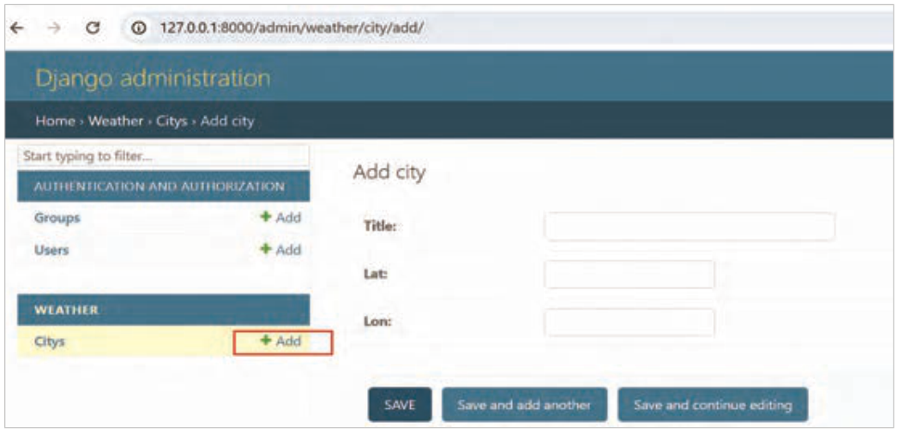
شکل ۴۲: فرم Add city
جدول ۲: طول و عرض جغرافیایی چند شهر
نام شهر
عرض جغرافیایی (lat)
طول جغرافیایی (lon)
میناب
27.1478
57.0738
همدان
37 .7981
48 .5146
تهران
35 .7219
51 .3347
الشتر
33.8632
48 .2617
تفرش
34 .6936
50 .0154
بابل
36.5387
52.6765
جهرم
28 .5177
53 .5744
تبریز
38 .0792
46.2887
سبزوار
36.2152
57 .6678
Page 295
Learning unit 2
Have you ever thought about this
How does a site communicate with the database?
How does a web application recognise a guest user?
How is the information that users enter in forms stored in the database?
How can a programmer prevent errors from happening in a site?
By the end, the student is expected to
Be able to make changes in the database using Django.
Understand and reason about the concepts of field and table in Django.
Be able to save the information of forms in the database using Django.
Get to know the concept of ORM in Django and be able to write simple queries.
Know the common problems and bugs in web applications and be able to fix the problems practically.
Performance standard
The student can, by making a Model in Django and using HTML forms, implement the connection with the database and store and retrieve the information users enter in tables.
Page 296
Making the city table in the database
Up to this step your site shows only the temperature of the cities you specified in the view; that is, in show_temp_view the city name is fixed and the temperature of one city is always shown. A better way is for the guest user to be able to choose the city they want.
To implement this feature, you need to store the information of the cities, together with the latitude and longitude of each city, in the database; then when the user enters the site, they see a list of cities and, by clicking on the name of a city, see the temperature of the city they want.
To implement this feature you must create a table in the database.
Each app has a file named models.py. Django uses models to make tables. Each model in Django is equal to a table, with the same name, in the database. In the first step, the class needed to define the table and the columns of the table must be created inside the file models.py.
Open the file models.py in the weather app. Then change the content of this file as in Figure 27.
Figure 27: Making the City model
Explanation of the code:
Line 1: the module models is imported from the module django.db. In fact with this line the tools and classes needed to define database models are imported.
Line 3: the class City is created, inheriting from Model, to make the table of cities. Model is Django's base class for making models (database tables) and provides the facilities needed to communicate with the database.
Line 4: this statement makes a field in the table to hold the city name as text, with a maximum length of 50 characters. For CharField, setting max_length is compulsory.
Line 5: FloatField is used to hold decimal numbers. The latitude and the longitude are both decimal numbers.
Page 297
To use the model City, the matching table must be made in the database.
In the terminal run the command makemigrations as in Figure 28.
Figure 28: Running the command makemigrations
When you run makemigrations, a file named 0001_initial.py is created inside the weather app in the migrations folder. This file prepares the code needed to turn the model into a real table. In the next step run the command migrate in the terminal as in Figure 29.
Figure 29: Running the command migrate
Page 298
After running migrate, Django's default tables and the table city are made in the database db.sqlite3.
Viewing the database tables
To see the structure and content of the tables inside the database, you can install the SQLite Viewer extension as a helper tool. To install this extension make sure the internet is connected (Figure 30).
Figure 30: Searching for the SQLite Viewer extension
After installing the mentioned extension, by clicking on the file db.sqlite3 you will see Django's default tables and the table city (Figure 31).
Figure 31: The database tables
Page 299
As is shown in Figure 31, the table city was made with the prefix weather. By clicking on the table weather_city, the list of fields is shown on the right. At the moment there is no record in the table city.
With the SQLite Viewer extension you can only see the content and structure of the tables and there is no ability to save information.
To change the content of the table city or to add the names of new cities to the table, you need to enter Django's admin panel. Of course, you still cannot enter the data of the cities into the database through the admin panel, because the admin user has not been defined yet; so in the next step it is the turn of defining the admin user.
Django's admin panel
To enter the admin panel, a username and password are needed. Enter the following command in the terminal:
python manage.py createsuperuser Django asks you for a username (Figure 32).
Figure 32: Running the command createsuperuser
As is clear, it has suggested the current Windows user name as the username.
You can enter the username admin or any other username you like, then enter in order the email, the password and the repeat of the password (Figure 33).
Figure 33: Successful creation of the admin user
Page 300
Figure 34: The warning about a simple admin password
After creating the admin user, with the SQLite Viewer extension you can see the created user in the table auth_user as in Figure 35.
Figure 35: Showing the created admin user in the database
Page 301
Now, to enter Django's admin management panel, turn on the Django server and open the admin page by typing the following address in the browser's address bar:
http://127.0.0.1:8000/admin/ then sign in with the username and password you made.
The admin panel will be shown as in Figure 36.
Figure 36: Successful sign-in to Django's admin panel
In the Authentication and Authorization¹ section, using Users you can see and manage the users of the site.
With the add button a new user can be created. To create a new user, you must enter the fields username, password and repeat of the password and press the save button (Figure 37).
Figure 37: The form for creating a new user
Page 302
You will see a successful save message as in Figure 38. At this step you can record additional information, such as the first name, last name, email and so on, for the created user.
Figure 38: Successful saving of the user
To see the list of created users, click on Users (Figure 39).
Figure 39: Viewing the list of users
Adding the city table to the admin panel
If you noticed, in Figure 36 the table of cities was not seen in the admin panel; by doing the steps that follow, you can add the table City to the admin panel.
Page 303
Each app in Django has a file admin.py. Open the file admin.py in the weather app and introduce the model City to Django's admin as in Figure 40.
Figure 40: Introducing the model City to Django's admin panel
Explanation of the code:
Line 1: the module admin for managing the admin panel is imported from contrib.
Line 2: the model City is imported from the file models.py.
Line 4: the model City is introduced to the admin panel with the statement register.
Now save the file, then refresh the browser; the table city has been added to Django's admin and the letter s has been added to the end of the model's name (Figure 41).
Figure 41: City added to the admin panel
Page 304
Entering the information of cities
In the admin panel, click the Add button (opposite Citys); you will see the city registration form (Add city) (Figure 42).
Figure 42: The Add city form
Table 2: The longitude and latitude of some cities